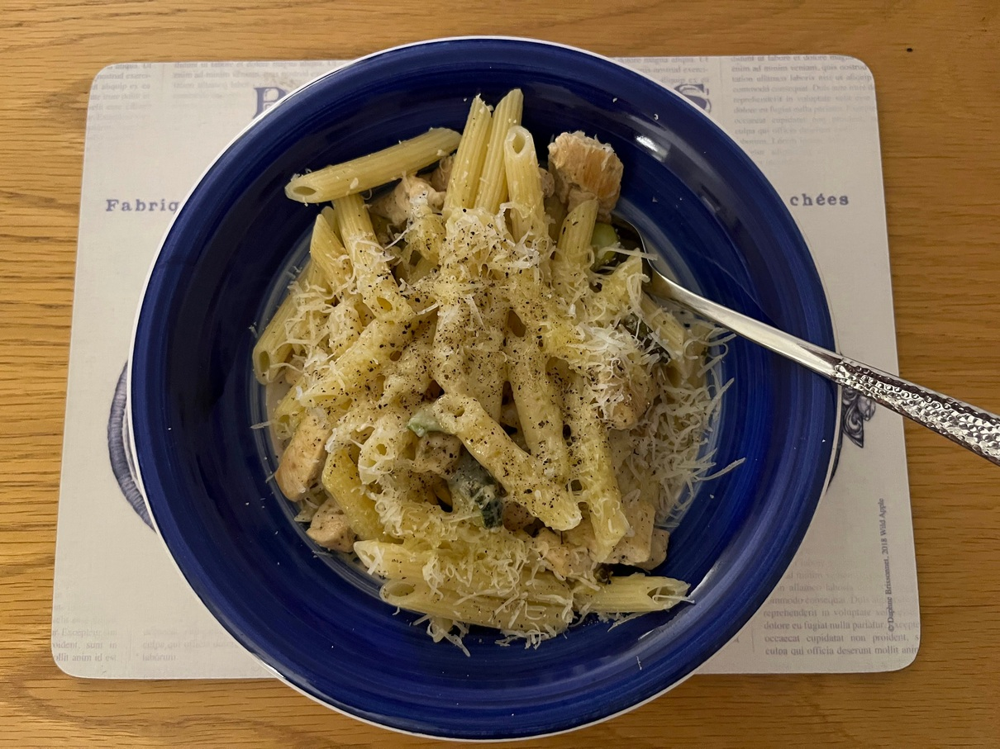

Penne con pollo e zucchine
Because Cara likes all these ingredients.

Ingredients
350g penne
1 onion
Pack of zucchini
250g chicken breast
Lemon zest and thyme if you want to get fancy
Optional green chilli if your toddler likes spice
Olive oil and black pepper
Lots of parmiggiano
Dice onion and fry in some olive oil.
Chop up the chicken and add to the onion.
Slice up the zucchini into discs and pop it in.
Add salt/pepper to taste, and simmer until a sauce is formed, about 15min (maybe put in some white wine at this point if you have a bottle open).
Boil the pasta water and cook the pasta as per the required time, remembering to salt the water once the pasta is in.
Mix it all together at the end, drizzle a bit of olive oil on each portion after serving, and get grating on the cheese.
Serves 4.